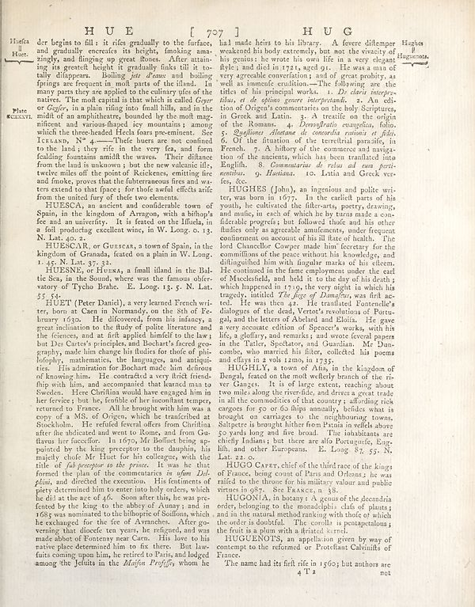

Source · scan and Parse blocks
Layers 4

Parse text by block reading order
- 0PictureH U E [ 707 ] H U G
- 1CaptionHaifa Hier.
- 2Textder legant all fill it rises gradually to the surface, and gradually reverted its heights, thinking ama- ingly, and flinging up great flows. After attin- ing its greatest height, it gradually falls till it to daily disappoint. Building _life drama_ and boiling fipings are frequent in molt parts of the island. In many years they replied to the otherup if one he naive? The molt capital is that which is called Gray or Ccyfer, in a plain rifling into final hills, and in the multi of an amphitheater, bounded by the molt marg- infeces and various shaped the mountains’s among which the three-headed Hechs fears pre-eminent. See TerLANN, N 4——Their there's not confined to the land, they rife in the very few, and form feuling fourstairs amidth the waves. Their dithers from the land is unknown, but she ever vulnerable, twelve molds off the point of Kickeness, emitting fire and froke, proves that the observations fires and wa- ters extend to that space; for those avoid effects safe from the united fury of their two elements.
- 3TextHUESCA, on ancient and considerable towns of Spain, in the kingdom of Granada, fieldsed on a plain in W. Long. 1..45, N. Lat. 32.
- 4TextHUESCAR, or Guuscar, a town of Spain, in the kingdom of Granada, feated on a plain in W. Long. 1..45, N. Lat. 32.
- 5TextHUESNE, or Hussx, a familiardan in the Dul- tie Box, in the Sound, where was the famous obr- vatory of Tycho Brake. E. Long 13. 5. Nat. 15.54.
- 6TextHUET (Peter Daniel), a very learned French wri- ter, born at Caen in Normandy, on the 8th of Re- burry 1659. He discovered, from his infantry a great inclination in the duty of palies literature and the fencences, and at first applied himself to the law; but De Carteri principles and Boehart served goes graphy made him change his duties for thalo of phi- hophyly, mathematics, the languages, and antiqui- ries. His timismo is Boeharachism him delicious of knowing him. He contened a very fact friend- hip with him, and consomata that fared men to Sweder. Here Chihlen would have engaged him her teries; but the, feasible of her incumbent temper, returned to France. All be brought with him was a copy of a MSI, of Oregon, which he sacrificed at Stockholm. He refuelle federal offers from Chitlina after the billions and went to Rome, and from Ga- tivers as far freeders. In 1670, the defining age pointed by the king perception to the daughn, his major, chief of the Hustic for his collegary with our title of _this practice_ on the prices. It was he dust formed the plan of the commemoration _in often Dul._ _pliant_, and directed the execution. His intentions of piety determined him to enter into holy orders, which he did at the war we 44.6. Soon after this, he was per- fetted by the long, no has abby of January and in 168s was nominated to the hillopric of Sollions, which he exchange for the free of Armouth. After go- verning their director ten years, his religious, and any made about of Pontesny near Caen. His love to his massive place determined him to the there. But that finis coming upon him, he retired to Paris, and lodged among the Jefuits in the _Maifon Profiffe_, whom he
- 7Texthad made heys to his library. A fewer dilempper weakened his body extremely, but was the vivacity of his genius:' he wrote his own life in a very elegant flyts) and died in 1721, aged 91. He was a run of very accessible construction, 1nd of great probity, as well as immense civilization--The following are the titles of his principal works. 1. _De time laungre-_ _values, of giving some interceptions_. 2. An eli- tion of Origen's comentaries on the holy Scriptures, in Greek and Latin. 3. A travtile on the origin of the Romanza. _Dornedible examples, folio._ 5. _Sauffinese Alnetane de conocrinia romania et filais._ 6. Of the duration of the terrestrial passifies, in French, 7. Albility of the comments on tangica- tion of the ancient, which has been raindicated into English. 8. _Demonstrate du rival and semi porti-_ _constitutes._ 9. _Hetainas._ 10. Listin and Greek ver- fen, 6.
- 8TextHUGHES (John), an ingenious and polite wri- ter, was born in 1677. In the earliest parts of his youish, he continued the difference, poetry, drawing, and minds, in each of which he by team made a con- fidercable progress() but followed thoof and his other fluides only as regarded amendments, except frequent containment on account of his illust of health. The land Chanelhoe Cowper made hint forecerty for the commitons of the peace, not his knowledge, and illinguished him with singular marks of his clients. He contained in the farm employment under the end of Meschelek, and had it to the day of his death, which happened in 1719, the very light in which his tragedy, entitled _The large of Damar, was first ac-_ ing. He was then ... He realized Pontoredley dialogues of the dead, Vertact's evolutions of Portu- gal, and the latter of Abrilad and Dolits. He gave very accurate edition of species's works, with his life, a gloffary, and remarks; and wrote several papers in the Father, Speichere, and Grandians Mr Duno- combo, who married his father, collected his poems and days in a vols 12mo, in 735.
- 9TextHUGHILY, a town of Afai, in the kingdom of Bangels, feated on the molt velocity branch of the in- ver changes. It is of large extent, reaching about two miles along the river, flat, and dress a great trade all all the commodities of this country, affirming cik cargos for 50 to Ohio annually, besides what is though to cartages so the neighboring towns, Solitpere is brought hitner from Patnia in refels above 50 yards long and five broad. The inhabitants are chely linking but there are also Deutsche Forge, ilib, and other Europens. E. Long. 87, 55. N. Las 24.0.
- 10TextHUGO CAvery, chief of the third race of the kings of France, being count of Parra and Orleans; he was refiled to the chrome for his military vollor and public resturs in 287. See Fears, n 38.
- 11TextHUGOONIA, in botany 12, genus of the decandria order, belonging to the monopolph, clic of plants; and in the natural method ranking with those of which the order is doubtful. This corridor a postapatolous; the fruit in a plant with a printed barrel.
- 12TextHUGUENOTS, an application given by way of concept to the referred or Protestant Calvinifts of France.
- 13TextThe name had its first rife in 1560; but authors are
- 14Page-footer4 T 2
Provenance page_id, checksum, Parse model
- page_id
- britannica:309f765b1ecc83e0a7f7762e44b4a927a7555443:train:1327
- sha256
- 7d41b1db21d5e291f0cbf58aa92f8820d11602e700d5e337935c65b9d75b6211
- Parse
- nvidia/nemotron-3.5-parse · finish stop